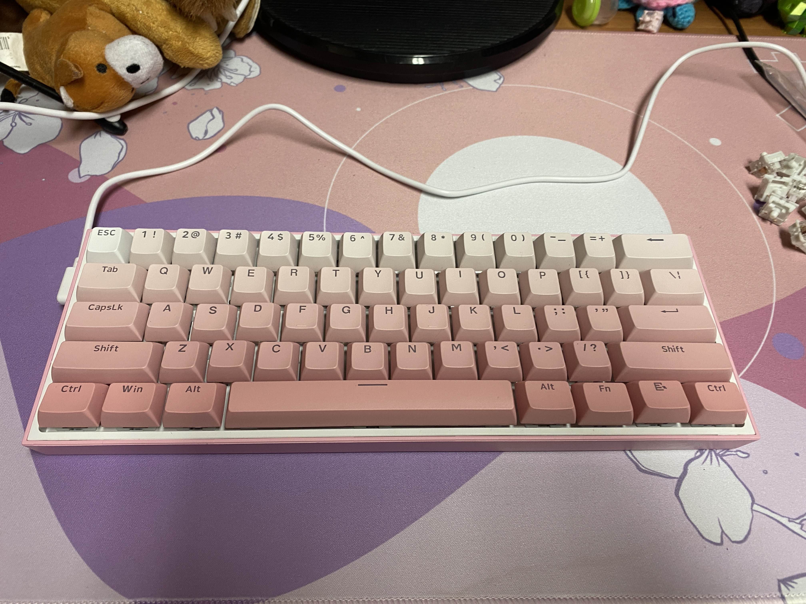
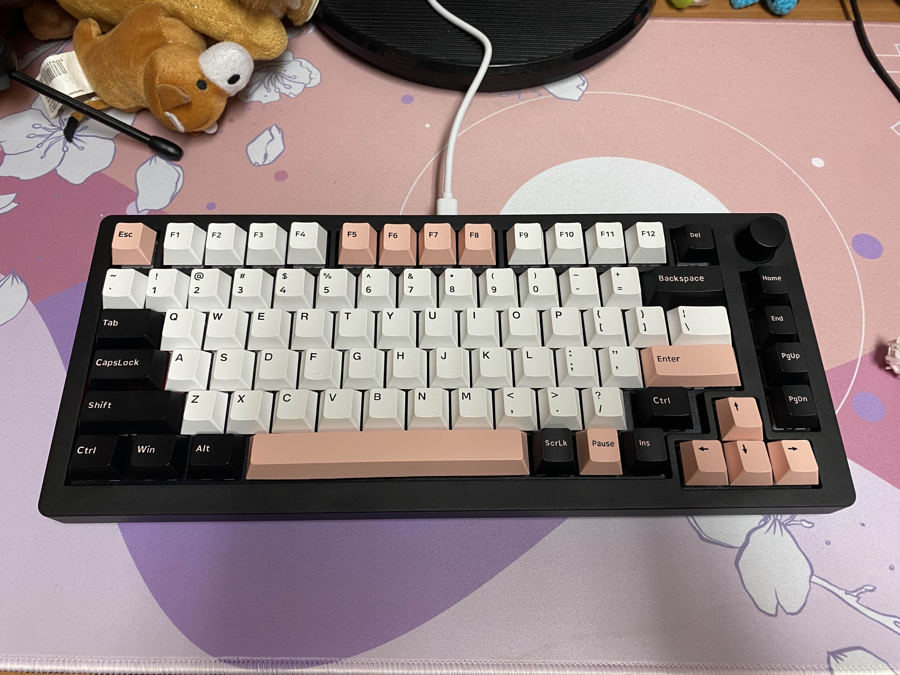
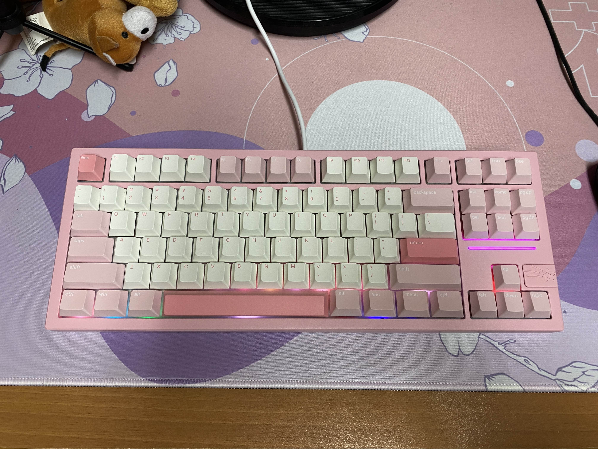
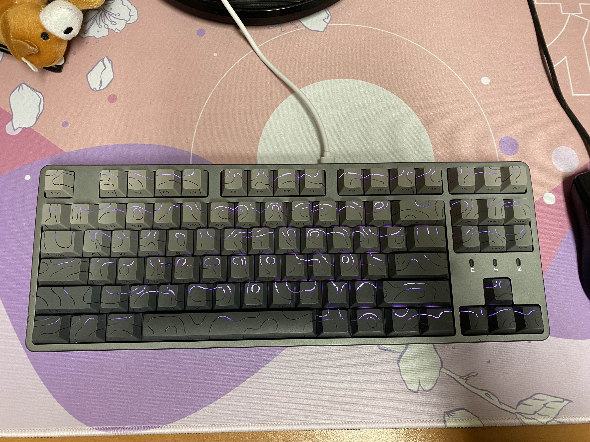
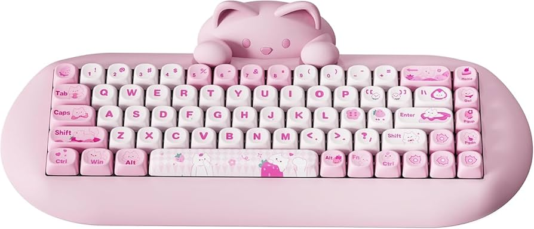

In my free time, I’ve always had a mix of creative hobbies, from writing poetry, baking, to making playlists. But lately,
I’ve found a new obsession of building custom mechanical keyboards. What started as simple curiosity about typing feel
quickly evolved into a creative and technical outlet where I can blend design, technology, and personal expression.
Each keyboard I build is a reflection of my style, from the sound and texture of the switches to the color scheme and
layout of the keycaps.
This hobby naturally connects to my background in computer hardware. After building my
own PC, I became fascinated with how every small detail, from cables to my peripherals, can affect the overall experience.
Keyboards, especially, felt like the perfect combination of form and function, allowing me to customize not just how
I type, but how I interact with technology every day.
Interestingly, this passion didn’t start with me, but it
started with my partner. At first, I brushed it off as an expensive, overly technical niche. But after watching
him carefully assemble switches and keycaps, I became intrigued by the process. Before I knew it,
I was soldering, lubing switches, and picking out keycap sets of my own. Now, I’ve built four custom keyboards;
each with a unique sound, feel, and aesthetic, yet all tied together by my signature pink, white, and black theme.

My latest custom keyboard build with pastel pink and white keys and a 60% keyboard layout with Silent White Linear switches.
Who – About Me
Hello! If you’ve found your way here, you probably already know a little bit about me.
I’m a Computer Science student who loves bringing ideas to life through hands-on, creative projects that mix
technology, design, and my creativity.
One of my favorite outlets for that creativity is building custom mechanical keyboards.
It’s a perfect blend of art and engineering, where I get to experiment with sound, color, and feel all at once.
Every board I build becomes a reflection of my passion and personality, from the type of switches I choose
to the aesthetic that ties the entire build together.
What I love most about this hobby is the balance it brings. There’s something satisfying about
planning layouts, selecting components, and carefully piecing everything together.
It’s detailed and methodical, but also relaxing—almost meditative.
It reminds me that technology doesn’t always have to be serious or rigid; it can be playful, expressive, and personal.
Each keyboard I’ve built has taught me something new about patience, problem-solving,
and even how design choices can shape the way we interact with our everyday tools.
What started as curiosity has turned into a small creative journey for me, and I'm forever glad I decided to pursue it.

A top favorite of mine, black 75% build keyboard with Pink Retro Sakura GMX keycaps and pink/black dancer inspired Drop keycaps.
When – Best Times to Build
I usually work on new keyboard builds in the evenings or on weekends, when I can really slow down and enjoy the process.
There’s something meditative about it—laying out all the parts, turning on a playlist, and letting the hours pass as I tune the sound of each switch and feel of each key.
Every small click feels like progress, and by the end of the night, it’s rewarding to see something tangible come to life.
Spring and winter breaks are my favorite times to start fresh builds since I finally have the time to experiment without rushing.
That’s when I get creative; trying out new switch types, testing different keycap profiles, and exploring how colors and materials change the whole typing experience.
It’s like art and engineering meeting halfway, and I love getting lost in that balance.
I also have a few friends who share the same passion, which makes the hobby even more fun.
When we all have a free afternoon, we’ll hang out and help each other with the more tedious tasks, like lubing hundreds of tiny switches or balancing stabilizers.
What could feel repetitive alone becomes a social, collaborative kind of hangout with music, laughter, and a shared appreciation for our craft.
It’s one of those small creative communities that makes building keyboards feel a little more meaningful every time.

My main keyboard, a Galaxy80 pink aluminum build with Akko Pink Haze switches and pink cozy bakery keycaps from Drop.
Where – Building Spaces
Most of my builds take place at my home workspace. A small but cozy setup filled with tools like a soldering iron,
a switch and keycap puller, and a jar of Krytox within reach for when it’s time to lube switches.
It’s a creative corner where I can focus, tinker, and unwind after a long day.
That said, when inspiration hits, I can build just about anywhere.
Once, I even started assembling a keyboard during a pumpkin carving event I was hosting. I just couldn’t resist the urge to finish a new board.
It’s funny how a technical hobby like this can turn into something you want to bring with you everywhere.
Every now and then, I’ll take trips to local stores like Micro Center to browse new cases, switches, and accessories in person.
Online shops are just as important to the process. Milktooth offers high-quality switches at great prices (my personal favorite),
Drop has beautiful and durable keycap sets, and of course, Amazon is perfect for picking up essentials like desk mats and budget-friendly starter parts.
Whether I’m in a store or scrolling late at night, the hunt for the perfect components is part of the fun.

My first keyboard, a hot-swappable grey magnetic board with a topographic gray/black theme pink Lucky Akko switches.
How – Building Process
Choose a keyboard case and layout (75%, 60%, etc.)
The case and layout determine the overall shape, size, and aesthetic of your keyboard.
Smaller layouts like 60% or 65% are compact and portable, while larger ones like TKL or full-size
offer more keys and functionality. This will be the foundation of your entire build, so take time
to pick something that truly fits your style and needs.
Select switches and keycaps for sound and feel.
Switches are the heart of your keyboard. They control how each key feels and sounds.
Choosing the right ones can make a huge difference in comfort and typing experience.
Different switches make different sounds. Usually, the product description will tell you their feel and tone.
Common types include:
Linear – smooth and quiet, with no tactile bump.
Tactile – offers a small bump for feedback without the noise.
Clicky – loud, satisfying clicks for those who love audible feedback.
Silent – dampened for quiet environments or late-night typing.
Thocky – deep, resonant sound often achieved with specific cases or foams.
Creamy – buttery-smooth sound and feel, often a mix of lubing and switch material.
Lube any switches and assemble every piece.
Lubing switches can make your board feel smoother, reduce scratchiness, and enhance the typing sound.
Once everything’s prepped, it’s time to start assembling; placing switches, stabilizers, and keycaps carefully to
ensure every part fits perfectly.
Test and program any RGB effects.
After assembly, connect your keyboard to test all the switches and make sure everything works as expected.
Then comes the fun part: programming! Many custom keyboards use software like VIA or QMK, allowing you to remap keys,
create custom macros, and add unique RGB lighting patterns that match your personal aesthetic.
Explanation of linear, tactile, and clicky switches.
Why – Why I Love This Hobby
Building keyboards gives me a hands-on way to express creativity while diving into the world of electronics and design.
Every build feels like a new experiment. A mix of art, tech, and patience.
I’ve learned how much small details matter: the type of switch, the thickness of a keycap, or even the case material can
completely transform how a board sounds and feels under your fingertips.
What I love most is the balance between technical problem-solving and personal expression.
Soldering switches or programming RGB lighting satisfies the logical side of my brain, while choosing colors, layouts, and
keycap themes lets my artistic side take over.
Each board becomes a reflection of my mood and personality, from bright and playful to minimal and sleek.
There’s also something deeply grounding about typing on a keyboard I built myself.
It turns something ordinary, writing, coding, or gaming, into a more intentional experience.
Each keystroke feels personal, like I’m using a tool made just for me.
The custom keyboard community has also been a huge source of motivation.
Builders constantly share new ideas, test materials, and push the limits of what’s possible.
It’s a welcoming, creative space where everyone learns from each other, and I’ve made some great friends through it.
Collaborating, trading parts, and even comparing typing sounds has become one of the most unexpectedly fun parts of the hobby.

My dream keyboard, the YUNZII pink cat keyboard.
AI Prompts Used
Text assistance: “Generate sample layout text for a one-page
keyboard hobby website design.”